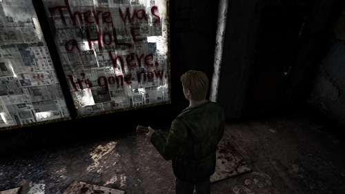

¿Qué es lo que debe de tener un buen juego de terror?
No nos hagan mucho caso, pero el survival horror es quizás uno de los géneros dentro de la industria más reformados y que no sigue un parámetro establecido, sobretodo si buscamos variantes como el horror psicológico u otros ejemplos. ¿Cómo empezó?, ¿cómo le fue en su mediana edad y cómo es ahorita?, la cosa ha cambiado mucho. El problema con esto, es que a veces nos levantamos el cuello diciendo que tal juego representa la mejor esencia del terror, o que aquel otro juego revive las viejas glorias del género, pero la verdad es que no hay nada escrito en piedra y el terror se puede medir de muchas formas, cosa que no hace preguntarnos: ¿Qué es lo que debe de tener un buen juego de terror?
Antes que nada y para crear líneas desde un principio, lo que hoy conocemos como "un buen juego de terror moderno" ha seguido parámetros que se alejan mucho de las joyas del género como Silent Hill o Fatal Frame, y si nos detenemos reflexivamente a ver el porqué de esta regalada y constante conducta de los juegos modernos, nos daremos cuenta de que es un formato que toda la audiencia que crea o consume gameplays en internet encuentra muy atractivo.
Todos los juegos que están en primera persona, con una casa, hospital, escuela abandonada o bosque que explorar, usan ese formato para que el usuario se meta tanto en el juego y así elementos como los jumpscares se puedan aprovechar al máximo. ¿Pero solo nos asusta o realmente nos causa terror? Por definición, el terror es un modo de defensa ante una amenaza que atenta contra nosotros, pero no solo porque salga algún asesino o demonio que quiere acabar con nuestra vida, el terror mayormente viene de lo desconocido, de algún trauma de la infancia que nos causa dolor, de una etapa de conflictos existenciales que nos hacen salirnos de nuestra zona de confort y no nos deja dormir por la noche, o de cualquier otro pensamiento que nos cause repulsión o incomodidad.
La taza de medición del miedo y la forma en cómo provocarlo es muy amplia, pero los juegos de terror actuales nos están siendo creativos en este sentido y buscan crear al terror con recursos ya bien conocidos para no salirse del parámetro atractivo… ya saben, para la gente que consume videos de let's plays en Youtube. Bajo este punto hasta el teaser jugable de Silent Hills no termina de crear una verdadera atmósfera terrorífica.
Sin embargo, aunque parezcamos disco rayado, donde verdaderamente encontramos terror por la construcción de sus elementos como un todo son las viejas obras en tercera persona que se quedaron en la mente de todos quienes las jugamos en su tiempo. Juegos como Silent Hill 2 conseguían tocar dos temas que persiguen al humano, no solo en la oscuridad de la noche mientras duerme, sino también cuando alguien está comiendo durante el día o cuando se encuentra en el tránsito de la tarde. La muerte y el sexo, bajo esos dos preceptos la psique humana reacciona fuertemente y le da vueltas la cabeza una y otra vez, es por ello que juegos como Silent Hill usa estos dos tópicos en simbolismos y deconstrucciones para poder impactar al jugador, no solo por un susto súbito, sino para irrumpir fuertemente su subconsciente.

El miedo a lo desconocido, no solo de monstruos o situaciones de riesgo con fantasmas y sangre por doquier, también situaciones de riesgo que con el juego de cámaras, los sonidos y detalles, puedan hablarnos directamente a nuestra cabeza y ponernos completamente incómodos, con ganas de salir corriendo y no detenernos aunque nadie nos persiga... a eso es a lo que se le puede llamar "un buen juego de terror".